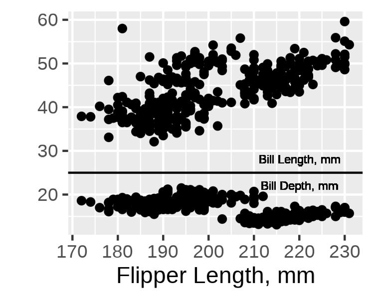

#(WIP)
Introduction
This package was developed using vibe coding. While there are many approaches to building a package using AI, because this started as a basic “is this possible?” question to ChatGPT’s new (at-the-time) version 5 model, it grew organically from there. This page is designed to walk through the series of prompts and tasks used to create this package. For those not interested in the narrative journey or who just want to walk through the chat themselves, see this link.
I appreciate there is a great deal of controversy in the use of AI in the arts and software development. This little project did not seem worth the investment of real time to develop, nor does it need to meet any sort of rigorous standard in application. Even in this case, GPT needed a great deal of hand-holding and direction to meet the minimum of I was seeking. I wouldn’t consider this project an endorsement of AI or (melodramatically) a claim that vibe coding is just as good as classic coding, but as a tinkerer I can’t resist trying a new (or improved) tool.
Inception
I have always been a fan of how screenshots or scanned figures from old journals looked. Or how plots look after someone uses an image they took of of slide containing that plot elsewhere (speaking of controversies). Accompanying this section are some examples from pdfs I had sitting around.
Nice, official scan released by publisher. From: Collander R. The Partition of Organic Compounds Between Higher Alcohols and Water. Acta Chemica Scandinavica. 1951;5:774-780.
Sloppy, phone-based scan. From: Higuchi WI, Higuchi T. Theoretical Analysis of Diffusional Movement Through Heterogeneous Barriers. J Am Pharm Ass (Scientific ed.). 1960 Sep 1;49(9):598-606. (Scanned by me, circa 2014)
Edward Tufte’s books are rich with examples of what I’m referencing (at least in terms of scanned plots from a variety of popular and academic sources). A read through any of his works will find plots of various age, style and quality; a museum of data visualization to inspire and inform.
The point is that plots with this appearance seem like they meant something to someone at some point that it motivated them to capture it and collect it. While a small visual effect will not imbue a plot with that authentic and candid backstory, it can be fun to give a trivial plot the appearance of that importance.
My admiration for this style of plot was on my mind when OpenAI rolled out its current-newest ChatGPT model 5, which claimed substantial advancements in generative code quality and further improvement on the Thinking feature that had been introduced in the previous generation. I am fully skeptical of the code produced by these tools, but I also enjoy using ChatGPR for brainstorming so I wanted to give this model a go.
Development
It started with a question that had an obvious answer:
Is it possible to develop an R package that takes ggplot grobs and makes them look they were photographed from an old transparency slide? Or like they were scanned from an old journal (in which they were hand drawn)?
ChatGPT told me of course it is, and laid out the rough framework that would form the basis of the package:
It provided filters with interesting names of
slideify_transparency() and scanify_journal(),
which were kept forever. To address my desire to capture the hand-drawn
appearance of older plots/diagrams, the chatbot took the interesting
approach of rendering the plot as an svg, then wobbling the vectors and
rasterizing the result as a magick image. I was then refreshed on how to
build out an R package, which was a nice treat. Each of these functions
needed to be tested and refined, but I was in features mode so chugging
on.
I wanted to know the best way (in the chatbot’s perspective) one
would add period specific fonts to a plot, so users could easily get a
plot that looked like it came from a 1920s journal article. The solution
provided was a function that assigned certain eras and publication types
to known Google fonts, then systemfont and
showtext to render them in the image. This was a big
headache which also was set aside until later.
At this point, I think this is cool and maybe I wanted to work on it more. Me and ChatGPT, the prompter and the coder. Any good package needs a name to sell it, and while I did not think this would be a “good” package I still wanted it to have a good name. ChatGPT provided me with a few options, and I picked the first one which I also thought was best: ggpatina. My only issue with the suggestions was that many were very emphatic about this being a “ggplot2 extension” (“gg” prefix); I don’t think merely taking a grob and then doing most of the work with a magick image makes a package a ggplot2 extension. Nevertheless, I kept the “gg” prefix, and tried to make further improvements that would earn it.
More filters were requested by the prompter, and now breaking from the earlier naming scheme (I suppose since we have a name and branding is important) four new filters were coded:patina_ink_bleed() patina_kodachrome()
patina_photocopy() patina_blueprint
Now, fully ready to actually run with this project, I asked ChatGPT to give me everything so far as a package. It awkwardly provided me files to copy and paste so I kindly said: > Please provide the package as a zip file
I was obliged, and also gently reminded how I would install the zip file directly (if I wanted to use it as is). The file/dir structure of the zip file is below, pretty good starting point.ggpatina.zip
Refinement
As much as I love the 1974 Motor Trends analysis of 32 cars
released from 1972-1974, I’ll go ahead and use penguins for
this section. Just to switch it up.
peng_p <- ggplot(penguins, aes(x = flipper_len)) +
geom_point(aes(y = bill_len)) +
geom_text(aes(x = 220, y = 28, label = "Bill Length, mm")) +
geom_hline(yintercept = 25) +
geom_point(aes(y = bill_dep)) +
geom_text(aes(x = 220, y = 22, label = "Bill Depth, mm")) +
labs(
x = "Flipper Length, mm",
y = ""
)I started testing functions unsystematically, with
patina_ink_bleed(). The first version ChatGPT provided
didn’t do much:
peng_p |> as_magick(width = 4, height=3, dpi = 100) |> patina_ink_bleed()